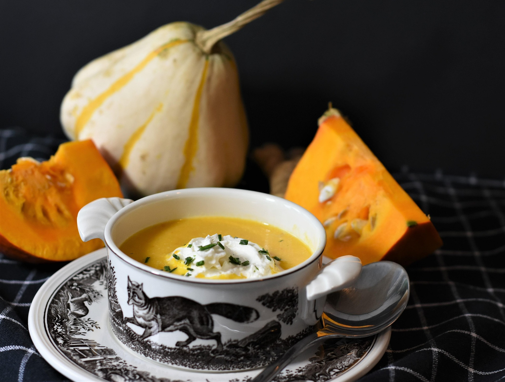

Eating in Edinburgh:
A city to taste slowly.
A slow guide to the dishes worth trying, the markets worth a Saturday morning, and the waterfront worth a long lunch.

First impressions: eat like you are not in a hurry
Food is one of the easiest ways to slow down in a new city. A meal gives you a reason to sit still, watch a street and notice the place you are in. In Edinburgh, that can mean a bowl of soup in the Old Town, a market stall on a Saturday, or a seafood lunch by the water.
Our approach is simple: choose one meal a day that you really look forward to, and let the other meals be easy. You will remember a long lunch far longer than a list of restaurants you rushed through.
We do not rank restaurants here. Menus, prices and owners change quickly, so this guide focuses on dishes, areas and markets, and on how to eat well in them.
Dishes to try: simple food with a story
Traditional Scottish cooking grew out of ingredients that were local, affordable and filling. You will see the same classics on many menus in Edinburgh, and they make a good place to start.
Haggis, neeps and tatties
Haggis is widely described as Scotland's national dish. It is usually served with neeps and tatties, which are mashed turnip and mashed potato. The poet Robert Burns wrote an address to it, and it is still eaten at Burns suppers. [1]
If the idea puts you off, ask for a vegetarian version, which many places now offer, or try haggis as a starter in a small portion first. [2]
Cullen skink
This is a thick soup made with smoked haddock, potatoes and onions. It comes from the town of Cullen on Scotland's north-east coast, and it suits a cold, damp day. [1]
Scotch broth
A hearty soup of barley and root vegetables, usually made with lamb or beef. It is often served as a first course in pubs, and it is an easy, inexpensive way to get a warm, local lunch. [3]
Cranachan
A traditional dessert linked to the raspberry harvest, made with oats and berries. If you visit in summer, it is a good way to taste the season. [4]
Order the dish that belongs to the place, then sit a while.
The Saturday market: breakfast beneath the castle
Edinburgh Farmers' Market takes place on Castle Terrace every Saturday from 9am to 2pm, beneath the castle rock. You can browse with a coffee, pick up produce to take home, or eat something from a street-food stall. [5]
Go early, walk the whole market once without buying, then return to the stalls you liked. Talk to the people selling: many of them make or grow what they sell, and a short conversation will tell you what is in season.
If you are not in Edinburgh on a Saturday, a bakery or café breakfast in a quiet street does the same job. Choose somewhere with a window seat and stay for a second cup.
Leith and the Shore: a long lunch by the water
Leith is Edinburgh's old port. Today it combines its maritime past with a lively dining scene, and the Shore waterfront is one of its main places to eat. [6]
The Shore runs along the Water of Leith and is known for its seafood restaurants. Fish and shellfish are a natural choice here, but there are also cafés, bars and bakeries, so you do not need a large budget to enjoy the area. [7]
Plan Leith as a half day. Walk along the water first, then eat when you are properly hungry. Check how you will get there before you leave, since transport options in Edinburgh change.
A suggested day of slow eating
Use this as a loose frame, not a timetable. On a Saturday, start at the market. On other days, begin at a café.
Morning — Market or café breakfast
On a Saturday, spend an hour at Castle Terrace. On another day, choose a bakery, sit down, and read or watch the street before your first plan of the day.
Midday — A bowl of something traditional
Have Scotch broth or Cullen skink in the Old Town, then walk it off with a visit to one of the city's libraries. A quiet afternoon indoors balances a rich lunch.
Evening — Dinner in Leith
Spend your best-meal budget here. Arrive before sunset, walk the Shore, and book ahead if you have chosen a particular restaurant.
Before you go
- Book your main meal. Popular restaurants can fill up, especially at weekends and during busy festival periods.
- Check opening hours. Markets, cafés and restaurants change their hours, so confirm details on each venue's own website.
- Tell staff about allergies and diets. Say clearly what you cannot eat, and ask how a dish is made if you are unsure.
- Ask what is in season. Seasonal dishes are often the freshest choice and the best way to taste the place.
- Eat considerately. Be patient with busy staff, leave a fair tip if you can, and keep walkways clear when you queue.
Further reading
[1] Culture Trip — Foods you must eat when you're in Scotland
[2] Insight Vacations — Traditional Scottish food you need to try
[3] Cottages & Castles — Guide to Scottish food
[4] AUSA — 5 Scottish recipes you can make at home
[5] Time Out — Edinburgh Farmers' Market
[7] Culture Trip — Best things to see in Leith, Edinburgh
This article provides general travel inspiration. We do not rank or endorse specific restaurants. Opening hours, menus and booking rules change, so always confirm details on the official website of each market or venue.